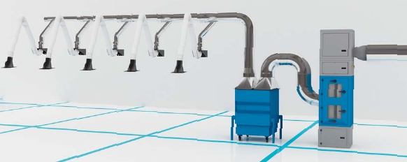

Die Erfassung ist nie vollständig; daher können weitere Maßnahmen notwendig sein.
Am wenigsten wirksam ist die Raumlüftung (technisch aufwändig und teuer). Sie kann aber die Erfassung an der Entstehungsstelle ergänzen.
Rechenbeispiel aus der Praxis:
In einer Halle mit einer Grundfläche von 25 m x 40 m und einer Höhe von 6 m befinden sich 5 Schweißarbeitsplätze. Eine technische Hallenlüftung müsste auf mindestens 30 000 m³/h ausgelegt werden (5-facher Luftwechsel). Die Schweißer wären durch diese Hallenlüftung allein nicht ausreichend geschützt.
Werden hingegen die 5 Schweißarbeitsplätze mit einer zentralen Absauganlage wie in Bild 9 ausgestattet, ist für die Absaugung in der Nähe der Entstehungsstelle ein Volumenstrom von nur 6 000 m³/h notwendig. Bei richtiger Anwendung durch die schweiflenden Personen (Nachführen von Hand über die Entstehungsstelle) werden die Arbeitsplatzgrenzwerte meist eingehalten. Bei der Absaugung an der Entstehungsstelle muss gegenüber einer Hallenlüftung nur ein Fünftel der Luftmenge abgesaugt werden, was energetisch und finanziell von Vorteil ist.

Bild 9 5-fach Schweißrauchabsaugung